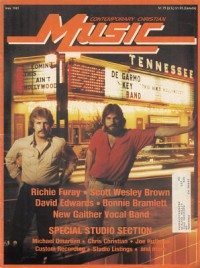
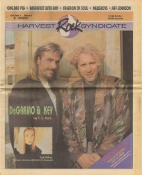
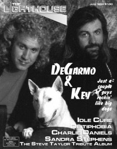

DeGarmo and Key
|  May 1981 Contemporary Christian Music |
 September 1985 Contemporary Christian Magazine |
 September 1991 Harvest Rock Syndicate |
 June 1994 The Lighthouse |
Media coverage:
- Nov 1977 in Campus Life "Star Struck", by Eddie DeGarmo, Steve Lawhead
- Nov 1978 in Campus Life "Spotlight: DeGarmo and Key"
- Sep 1979 in Contemporary Christian Music "DeGarmo and Key"
- Sep 1979 in Contemporary Christian Music "Talent: Rock & Roll With A Difference"
- Nov 1979 in Campus Life "Spotlight: DeGarmo and Key"
- Apr 1981 in Contemporary Christian Music "DeGarmo and Key"
- May 1981 in Contemporary Christian Music "On The Road With DeGarmo & Key", by Davin Seay
- Jan 1982 in Campus Life "Impressions: DeGarmo and Key", by Jim Long
- Jul 1982 in Campus Life "Impressions: DeGarmo and Key"
- Sep 1982 in Contemporary Christian Music "No Turning Back"
- Oct 1983 in Contemporary Christian Magazine "DeGarmo and Key"
- Feb 1984 in Campus Life "Expressions: Scan: The Word Is Out", by Jim Long
- Jun 1985 in Contemporary Christian Magazine "People & Places: The '666' Saga"
- Sep 1985 in Contemporary Christian Magazine "Dynamic Duo: DeGarmo & Key Battle Everything", by Davin Seay
- Nov 1985 in Eternity "Gallery: The Big Time", by Dr. Richard J. Stainslaw
- Feb 1986 in Charisma "Christians Excel With New Art Form"
- Feb 1986 in Contemporary Christian Magazine "A New Flavor From A Seasoned Performer", by M. Scott Dwinell
- Nov 1986 in CCM "DeGarmo and Key"
- Jan 1987 in CCM "Notebook: Lovin' Every Moment", by Robyn Frazer
- Win 1987 in Harvest Rock Syndicate "In Concert: Petra, DeGarmo and Key", by Johnny R. Cleric
- Feb 1987 in Charisma & Christian Life "Why Do They Sing?"
- Mar 1987 in Christian Life "News Notes: DeGarmo and Key; "Every Moment" featured on MTV"
- Sum 1987 in Harvest Rock Syndicate "Don't Stop The Music", by Mark Eischer
- Nov 1987 in CCM "DeGarmo and Key's Saving Grace", by Steve Rabey
- Nov 1987 in Notebored "DeGarmo and Key"
- Dec 1987 in Campus Life "Values In Media: DeGarmo and Key", by Chris Lutes
- Jan 1988 in CCM "Toys in the Band: DeGarmo and Key"
- Feb 1988 in CCM "Notebook: DeGarmo and Key Concert Challenged"
- Sum 1988 in Harvest Rock Syndicate "D & K Concert Video", by Kathryn E. Darden
- Nov 1988 in CCM "Notebook: DeGarmo & Key Fight Teen Suicide in Louisville", by Don Boyer
- 7 Apr 1989 in Christianity Today "Arts: Artbriefs: Soul Man", by Daniel Coran, Harold B. Smith
- Feb 1990 in CCM "Toys in the Band: DeGarmo and Key"
- Apr 1990 in CCM "In The News: The Zondervan Company Takes The Pledge"
- Oct 1990 in Campus Life "Expressions: Up From Graceland: The Chronicles of DeGarmo and Key, Part 1", by Jim Long
- Nov 1990 in Campus Life "Expressions: Beyond The Janitor's Closet: The Chronicles of DeGarmo and Key, Part 2", by Jim Long
- Jul 1991 in CCM "Fun in the Son", by David Banta
- Sep 1991 in Harvest Rock Syndicate "a ministry in music", by T. L. Faris
- Mar 1992 in CCM "Getting The Message: Abortion", by Steve Rabey
- Apr 1992 in Religious Broadcasting "DeGarmo and Key Promote Biblical Literacy Through Music", by Michael Stanford Remington
- Jul 1993 in CCM "Still Hot", by Bruce A. Brown
- Sep 1993 in Heaven's Metal "A Walk on The Lighter Side", by Doug Van Pelt
- Dec 1993 in CCM "In Concert: DeGarmo and Key, Geoff Moore & the Distance, Karthi", by Rhonda Miskowski
- Jun 1994 in The Lighthouse "DeGarmo and Key", by J. Warner Soditus
- Oct 1994 in CCM "Poster: DeGarmo and Key"
- Nov 1994 in Heaven's Metal "Going To Extremes", by Jerry Wilson
- Mar 1995 in CCM "On The Beat: End of an Era"
- Jul 2010 in CCM Digital "Keys to the Kingdom: Dana Key Goes Home"
Albums & reviews:
1977: This Time Thru
- Jun 1978 in Campus Life, by Steve Lawhead
- Nov 1978 in Logos Journal
- Win 1987 in Harvest Rock Syndicate
1979: Straight On
- Aug 1979 in Campus Life, by Steve Lawhead
- Nov 1980 in Group, by Stan Lambert
- Win 1987 in Harvest Rock Syndicate
- Jun 1988 in CCM
1980: This Ain't Hollywood
- Dec 1980 in Contemporary Christian Music
- Mar 1981 in Campus Life, by Gord Wilson
- Apr 1981 in Christian Herald, by Ron R. Lee
1982: No Turning Back
- Jul 1982 in Contemporary Christian Music, by Monte Allen
- Jul 1982 in Christian Life, by Jim Burkhardt
- Nov 1982 in Christian Herald, by Ron R. Lee
1983: Mission of Mercy
- 1983 in Cornerstone
- Dec 1983 in Campus Life, by Jim Long
- Dec 1983 in The Lutheran, by Steve Rabey
- Mar 1984 in Christian Herald, by Peter Gross
- Sum 1989 in Harvest Rock Syndicate, by Brian Quincy Newcomb
1984: Communication
- Dec 1984 in Contemporary Christian Magazine, by Bruce A. Brown
- Jan 1985 in MusicLine, by Quincy Smith-Newcomb
- Jan 1985 in Campus Life
- May 1985 in Christian Herald, by Peter Gross
1985: Commander Sozo and the Charge of the Light Brigade
- Oct 1985 in MusicLine, by Thom Granger
- Nov 1985 in Contemporary Christian Magazine, by Bob Darden
- Dec 1985 in Campus Life
- Dec 1985 in The Lutheran, by Steve Rabey
- Win 1986 in YouthWorker, by Mike Atkinson
1986: Streetlight
- Nov 1986 in Campus Life, by Jim Long
- 1986 in Cornerstone, by Jon Trott
- Nov 1986 in CCM, by Mark Eischer
- 21 Dec 1986 in The Lutheran, by Steve Rabey
- Jan 1987 in U, by Ross Pavlac, Diana Lynne Pavlac
- Jan 1987 in Group, by Stephen Parolini
- Jan 1987 in Notebored
- Spr 1987 in YouthWorker, by Mike Atkinson
1987: D & K
- Fall 1987 in YouthWorker, by Mike Atkinson, Mike Devito
- 1987 in Cornerstone, by Jon Trott
- Nov 1987 in CCM, by Brian Quincy Newcomb
- Win 1987 in Harvest Rock Syndicate, by Greg Easterling
- Jan 1988 in U, by Ross Pavlac
1988: Rock Solid - Absolutely Live [Video]
- Sep 1988 in CCM, by Brian Quincy Newcomb
- Fall 1988 in Harvest Rock Syndicate, by Sheree K. Marion
1988: Rock Solid - Absolutely Live
- Oct 1988 in CCM, by Brian Quincy Newcomb
- Fall 1988 in Harvest Rock Syndicate, by Angie Graves
- Nov 1988 in Campus Life, by Jim Long
1989: Take the Pledge [Video]
- Spr 1990 in YouthWorker, by Mike Atkinson
- Apr 1990 in CCM, by Doug Van Pelt
- Fall 1990 in Harvest Rock Syndicate, by Steve Greenfield
- Fall 1992 in Lutheran Libraries, by Susan G. Nauha
1989: The Pledge
- Aug 1989 in CCM, by Mark Eischer
- Oct 1989 in Campus Life, by Jim Long
- Fall 1989 in Harvest Rock Syndicate, by T. L. Faris
- Win 1990 in YouthWorker, by Mike Atkinson
1989: This Time Thru + This Ain't Hollywood
- Sum 1989 in Harvest Rock Syndicate, by Brian Quincy Newcomb
1991: Go to the Top
- May 1991 in Harvest Rock Syndicate, by Jori Butler
- Jun 1991 in CCM, by Brian Quincy Newcomb
- Fall 1991 in YouthWorker, by Steve Rabey
- Nov 1991 in Moody
1991: Go To The Top [video]
1992: Destined To Win - The Classic Rock Collection
- Sep 1992 in Syndicate, by Arsenio Orteza
- Spr 1993 in YouthWorker, by Steve Rabey
1993: Heat.It.Up
- Jun 1993 in CCM, by Thom Granger
- Jul 1993 in The Lighthouse, by Bryan W. Brendley, Roger Appelinski
1994: To Extremes
- Jun 1994 in The Lighthouse, by Roger Appelinski
- Jul 1994 in CCM, by Bruce A. Brown
- Jul 1994 in Heaven's Metal, by Doug Van Pelt
- Aug 1994 in Syndicate, by Chris Well
- Oct 1994 in Campus Life, by Felicia Magiulo
- Win 1995 in YouthWorker, by Robert Faulhaber, Jr
Award Summary (Nominations / Wins)
Dove Awards- 1981 Dove Awards
- Contemporary Album: This Ain't Hollywood
- Group of the Year
- Short Form Music Video: "Every Moment"
- Group of the Year
- Rock Album: D & K
- Short Form Music Video: "Rock Solid"
- Rock Album: Rock Solid - Absolutely Live
- Group of the Year
- Rock Album: The Pledge
- Musical Album: The Pledge
- Short Form Music Video: "Hand In Hand"
- Long Form Music Video: Take the Pledge [Video]
- Short Form Music Video: "Family Reunion"
- Long Form Music Video: Go To The Top [video]
Books about DeGarmo and Key
- "DeGarmo and Key" in The Encyclopedia of Contemporary Christian Music (Mark Allan Powell, 2002).
- Chapter also includes: Eddie DeGarmo, Dana Key.
- "DeGarmo & Key" in The Billboard Guide to Contemporary Christian Music (Barry Alfonso, 2002).
© 2011 CMnexus. Last updated May 2025. Contact: editor -AT- cmnexus -DØT- org